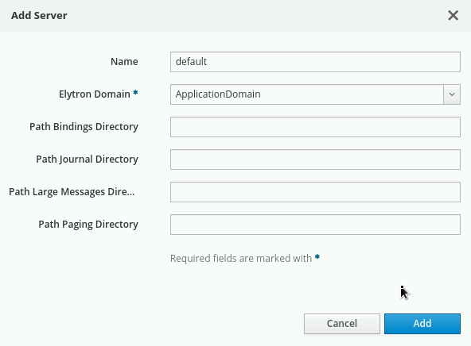
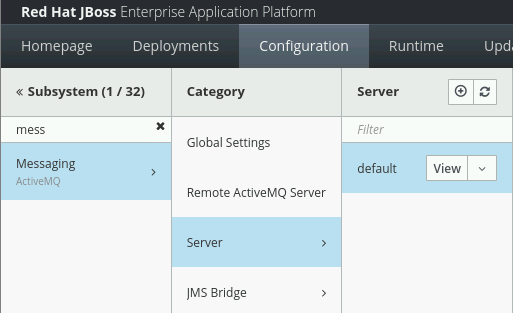

Configuring Messaging (JMS)
Messaging Concepts
-
Messaging provides a loosely-coupled communication mechanism for software components, enabling asynchronous processing.
-
For example, consider the checkout process for a web store that triggers the following actions:
-
Authorization and payment confirmation
-
Addition and removal of inventory
-
Delivery scheduling
-
-
These actions take time to process, so executing within a checkout request means users might have a long wait for order confirmation.
-
Hence they can be performed asynchronously.
-
Message-Oriented Middleware (MOM) manages message delivery and provides features like security and transactions.
-
The Java Message Service (JMS) provides a standardized API for MOM access, including ConnectionFactories, Queues, and Topics.
Overview of the Java Messaging Service (JMS)
-
JMS enables Java components to exchange messages independently.
-
JMS includes:
-
Connection Factories: Facilitate MOM connections.
-
Queues: Support FIFO message retrieval, ideal for point-to-point communication.
-
Topics: Enable publish-subscribe communication, accommodating multiple subscribers; MOM retains messages for offline consumers.
-
JMS Message Structure
-
JMS messages comprise:
-
Headers: Managed by the MOM, these define message attributes, primarily handled internally.
-
Properties: Producer-defined metadata facilitating communication between the MOM and consumers.
-
Bodies: Contain application-specific data, distinct from MOM infrastructure handling.
-
Configuring Messaging Resources
-
JBoss EAP 8 includes an embedded ActiveMQ Artemis, referred to as ActiveMQ.
-
ActiveMQ provides two types of acceptors and connectors:
-
HTTP variety: Employs the native ActiveMQ protocol via an HTTP connection, accepted by the undertow subsystem. This setup avoids the need for JBoss EAP to open extra firewall ports for remote messaging clients.
-
In-vm variety: Allows messaging clients within the same JVM as the ActiveMQ server to connect without network overhead.
-
-
Configuring messaging resources in JBoss EAP 8 involves several steps. Here’s a general outline of the process:
-
Access JBoss EAP 8 Management Console or CLI
-
Navigate to Messaging Subsystem: In the management console, navigate to the Messaging subsystem. It’s usually located under the "Configuration → Subsystem → Messaging → Server" section.
-
Add the server named default and select Application Domain under Elyton Domain and click Add.
-
Create "default" server as shown below:

-
-
Define Connection Factories: Define connection factories for establishing connections to the messaging server. You can configure attributes such as connection parameters, security settings, and connection pool settings. Eg: To create a pooled-connection-factory that refers to the default in-vm ActiveMQ connector, use the following command.
/subsystem=messaging-activemq/server=default/pooled-connection-factory=custom:add(connectors=[in-vm], entries=[<JNDI-NAME>])
-
Create JMS Destinations as per your Java application requirement. Eg: To create JMS queues, you can refer to below command.
/subsystem=messaging-activemq/server=default/jms-queue=TestQueue:add (entries=[<JNDI-NAME>])
-
Configure Security Settings: Configure security settings for accessing messaging resources if required. This may involve setting up authentication and authorization mechanisms.
-
Review and Apply Changes: Review the configuration changes you’ve made and apply them to the server.
-
Test Configuration: After applying the changes, test the messaging resources to ensure they are functioning as expected. You can send and receive test messages to queues or topics to verify connectivity and message delivery.
-
Lab: Configuring Messaging Resources
Outcome: In this lab, you create a JMS connection factory and a queue, and deploy sample applications that make use of them.
Pre-requisites: Download the applications (WAR files) we will deploy in this exercise under /opt directory:
-
Start the Red Hat JBoss EAP 8 standalone server instance.
[vagrant@server ~]$ cd /opt/EAP-8.0.0/bin/ [vagrant@server bin]$ ./standalone.sh
-
Open a new terminal and run the management CLI script.
[vagrant@server ~]$ cd /opt/EAP-8.0.0/bin [vagrant@server bin]$ ./jboss-cli.sh -c
-
Add the messaging-activemq subsystem module using below command:
[standalone@localhost:9990 /] /extension=org.wildfly.extension.messaging-activemq:add() {"outcome" => "success"} [standalone@localhost:9990 /] [standalone@localhost:9990 /] /subsystem=messaging-activemq:add { "outcome" => "success", "response-headers" => { "operation-requires-reload" => true, "process-state" => "reload-required" } } [standalone@localhost:9990 /] /:reload { "outcome" => "success", "result" => undefined } -
Create a server named "default" under messaging-activemq subsystem:
-
Navigate to management console at http://localhost:9990 and select Configuration → Subsystem → Messaging → Server and select "+".
-
Add the server named default and select Application Domain under Elyton Domain and click Add.
-
You should be able to see the default server as shown below:
-
Execute below command to further configure messaging subsystem.
[standalone@localhost:9990 /] cd /subsystem=messaging-activemq/server=default [standalone@localhost:9990 /] /subsystem=messaging-activemq/server=default/security-setting=:add [standalone@localhost:9990 /] /subsystem=messaging-activemq/server=default/address-setting=:add(dead-letter-address="jms.queue.DLQ", expiry-address="jms.queue.ExpiryQueue", expiry-delay=-1L, max-delivery-attempts="10", max-size-bytes="10485760", page-size-bytes="2097152", message-counter-history-day-limit="10") [standalone@localhost:9990 /] /subsystem=messaging-activemq/server=default/http-connector=http-connector:add(socket-binding="http", endpoint="http-acceptor") [standalone@localhost:9990 /] /subsystem=messaging-activemq/server=default/http-connector=http-connector-throughput:add(socket-binding="http", endpoint="http-acceptor-throughput" ,params={batch-delay="50"}) [standalone@localhost:9990 /] /subsystem=messaging-activemq/server=default/in-vm-connector=in-vm:add(server-id="0") [standalone@localhost:9990 /] /subsystem=messaging-activemq/server=default/http-acceptor=http-acceptor:add(http-listener="default") [standalone@localhost:9990 /] /subsystem=messaging-activemq/server=default/http-acceptor=http-acceptor-throughput:add(http-listener="default", params={batch-delay="50", direct-deliver="false"}) [standalone@localhost:9990 /] /subsystem=messaging-activemq/server=default/in-vm-acceptor=in-vm:add(server-id="0") [standalone@localhost:9990 /] /subsystem=messaging-activemq/server=default/jms-queue=ExpiryQueue:add(entries=["java:/jms/queue/ExpiryQueue"]) [standalone@localhost:9990 /] /subsystem=messaging-activemq/server=default/jms-queue=DLQ:add(entries=["java:/jms/queue/DLQ"])
-
-
Create a pooled-connection-factory that refers to the default in-vm ActiveMQ connector. Assign the JNDI name java:/jms/CustomCF to the factory.
[standalone@localhost:9990 server=default] ./pooled-connection-factory=\ custom:add(connectors=[in-vm], entries=[java:/jms/CustomCF]) {"outcome" => "success"} -
Leave this terminal window open with the management CLI connected.
-
Create a queue called TestQueue with java:/jms/queue/TestQueue as an assigned JNDI name.
[standalone@localhost:9990 server=default]$ ./jms-queue=TestQueue:add\ (entries=["java:/jms/queue/TestQueue"]) {"outcome" => "success"}-
Observe that the new queue has not received any messages.
[standalone@localhost:9990 server=default] ./jms-queue=TestQueue\ :read-resource(include-runtime=true) { "outcome" => "success", "result" => { ...output omitted... "message-count" => 0L, "messages-added" => 0L, ...output omitted... } }
-
-
Deploy and use the test application to produce messages.
-
Use the management CLI to deploy the mdb-client.war application.
[standalone@localhost:9990 server=default]$ deploy \ /opt/mdb-client.war [standalone@localhost:9990 server=default]
-
In a new terminal window, send an HTTP request to the server to create a new JMS message.
[vagrant@server ~]$ curl --data "count=1" --data "label=first" \ --data "message=test message body" http://localhost:8080/mdb-client/queue ...output omitted...
-
In the terminal where the management CLI is connected, verify that the messages were queued by viewing the messages-added value. Additionally, the message-count indicates that there are two messages waiting in the queue.
[standalone@localhost:9990 server=default] ./jms-queue=TestQueue\ :read-resource(include-runtime=true) { "outcome" => "success", "result" => { ...output omitted... "message-count" => 1L, "messages-added" => 1L, ...output omitted... } }
-
-
Shut down the server and close the management CLI connection.
-
In the management CLI terminal window, stop the JBoss EAP standalone server instance.
[standalone@localhost:9990 server=default] /:shutdown { "outcome" => "success", "result" => undefined } -
Exit the JBoss EAP management CLI client.
[standalone@localhost:9990 server=default]$ exit
-